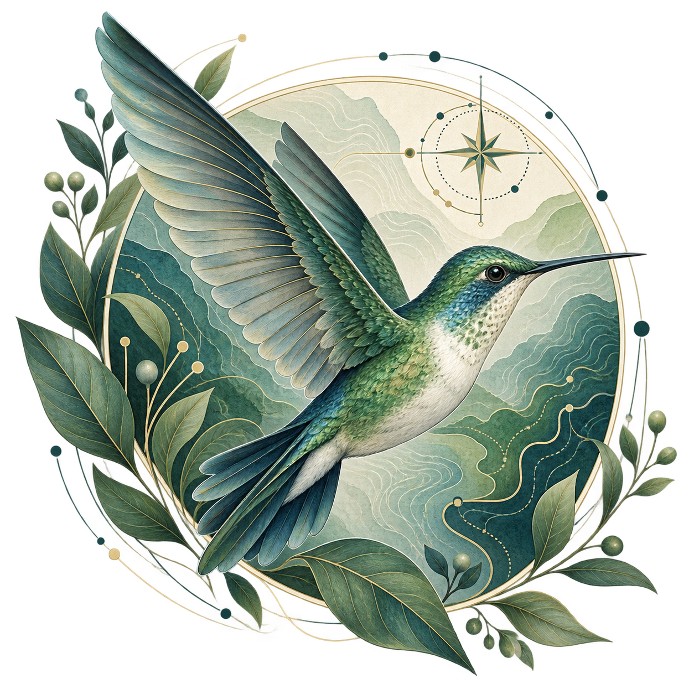
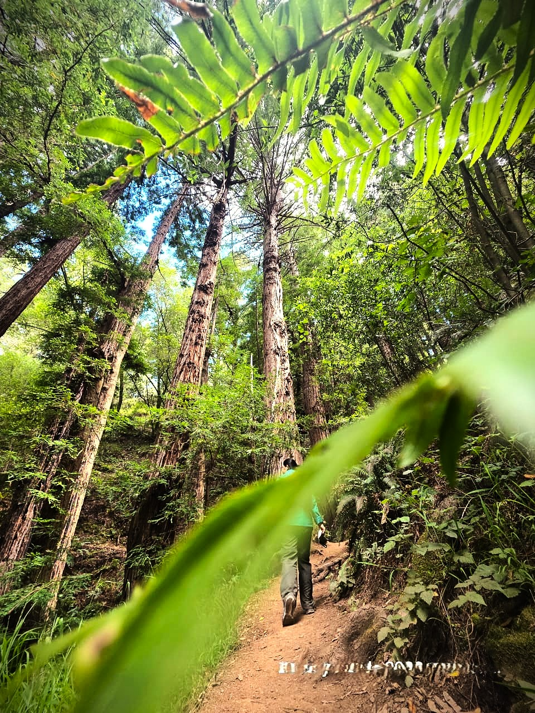

🌿 Observar
Biología
Comprender la vida, la biodiversidad y los sistemas naturales es el punto de partida de mi forma de analizar problemas.
Ciencia • Datos • Tecnología • Vida
Desarrolladora Java Full Stack
Combino mi formación en biología, estadística y sistemas de información geográfica con el desarrollo de software para crear soluciones tecnológicas útiles, confiables y con propósito.
“Observar, analizar y programar.”

Entender la vida, analizar los datos, programar soluciones.
Mi forma de trabajar conecta la observación de la vida, el análisis de datos y el desarrollo de tecnología para transformar problemas en soluciones.
Comprender la vida, la biodiversidad y los sistemas naturales es el punto de partida de mi forma de analizar problemas.
Transformo información espacial en mapas que permiten descubrir patrones, relaciones y territorios.
Datos que se conectan para descubrir patrones, relaciones y nuevas historias.
Transformo problemas e ideas en aplicaciones, interfaces y soluciones digitales funcionales.
Protección de información, sistemas y aplicaciones para construir entornos digitales más seguros.
Portafolio
Proyectos donde conecto programación, ciencia, datos y resolución de problemas.
Visualizador de información geográfica para explorar biodiversidad y distribución de especies.
SIG • Biología • Desarrollo Web
Ver proyectoAnálisis y visualización de datos biológicos mediante herramientas estadísticas.
Estadística • R • Datos
Ver proyectoAplicación web para gestionar y consultar información relacionada con proyectos ambientales.
Java • API • Desarrollo Web
Ver proyectoProyecto educativo para aprender conceptos y buenas prácticas de ciberseguridad.
Ciberseguridad • Web
Ver proyecto
Mi historia
Soy Rosario Chaparro Guerra, desarrolladora Java Full Stack con formación en Biología, Estadística y Sistemas de Información Geográfica.
Mi camino hacia el desarrollo de software nace de mi curiosidad por comprender cómo funcionan los sistemas, analizar información y transformar problemas en soluciones.
Mi formación científica me enseñó a observar, hacer preguntas, analizar datos y buscar patrones. Hoy aplico esa misma forma de pensar al desarrollo de tecnología.
Me interesa especialmente la intersección entre desarrollo web, ciencia, datos, SIG y ciberseguridad.
La curiosidad me lleva a observar; los datos, a comprender; la tecnología, a crear.
Herramientas
Herramientas que utilizo para observar, analizar y construir soluciones.
Programación orientada a objetos, lógica de programación y desarrollo de aplicaciones.
Construcción de estructuras semánticas, accesibles y organizadas para aplicaciones y sitios web.
Diseño de interfaces, layouts responsivos, animaciones y experiencias visuales.
Desarrollo de comportamiento, interacción y lógica para aplicaciones web.
Creación rápida de interfaces responsivas utilizando componentes y sistemas de cuadrícula.
Control de versiones para registrar, organizar y gestionar los cambios realizados en mis proyectos.
Gestión y publicación de repositorios, documentación de proyectos y colaboración mediante Git.
Análisis estadístico, exploración de datos y visualización de información.
Análisis espacial y representación geográfica para comprender patrones, territorios y biodiversidad.
Contacto
¿Tienes un proyecto, una idea o simplemente quieres conectar?